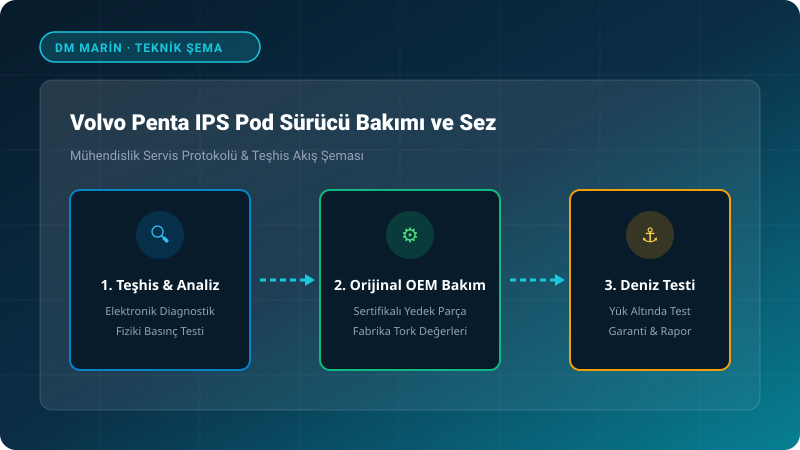

1. Volvo Penta IPS Pod Drive Technology & Hydrodynamics
Volvo Penta IPS (Inboard Performance System) revolutionized yacht propulsion with its forward-facing, counter-rotating pulling propellers. Operating in undisturbed water flow, IPS achieves up to 30% fuel savings, 20% higher top speed, and joystick docking precision compared to conventional straight-shaft setups. The pod housing is attached via a bolted ring collar with engineered breakaway shear points to safeguard the hull structure during high-speed underwater collisions.
2. Gear Lube Service & Dual Vacuum/Pressure Decay Testing
IPS gear lubricant must be serviced during annual haul-out or every 200 operational hours. Following oil drainage, technicians inspect fluid clarity for milky emulsification or ferrous wear particles. Prior to refilling with certified 75W-90/75W-140 synthetic gear lube, a mandatory vacuum (-0.5 bar for 5 min) and pressure decay (+1.0 bar for 5 min) test is performed to confirm seal integrity.
3. Propeller Shaft Radial Seals & Monofilament Line Ingress
The forward-facing duo-prop shaft seals are vulnerable to discarded fishing monofilament line. Once line wraps around the shaft hub, it cuts the outer Viton seal lip, allowing salt water ingress into the gear casing. Propellers must be dismounted annually, the shaft checked for groove scoring, and dual-lip seal assemblies renewed.
4. SUS Steering Unit Actuators & EVC Alignment Calibration
The Steering Unit Sensor (SUS) translates brushless servo actuator telemetry to the EVC core for individual pod vectoring. Alignment drift causes crab-walking and unstable heading control. Technicians utilize the Volvo Penta Vodia tool to perform end-stop limits and dynamic zero-point resolver calibration.
Frequently Asked Technical Questions (FAQ)
❓ What does milky IPS gear oil indicate?
💡 Milky oil is a clear sign of seawater ingress past the prop shaft seals or pod mating O-rings. The unit must be drained, inspected for gear pitting, resealed with genuine seal kits, and pressure-tested before returning to service.
❓ Which sacrificial anodes should be used on IPS drives?
💡 Use high-grade zinc or specialized marine aluminum anodes in saltwater environments. Yachts equipped with Volvo Penta ACP (Active Corrosion Protection) must have their reference electrode status verified via EVC telemetry.
❓ What are the tightening torque specs for IPS propellers?
💡 The forward prop nut requires 120 Nm of torque, while the aft prop nut is torqued to 90 Nm, followed by positive engagement of the lock-tab washer.
Get Certified Marine Engineering Support
Mobile shipyard-grade engineering directly to your marina berth across Istanbul, Bodrum, Marmaris, and Gocek.